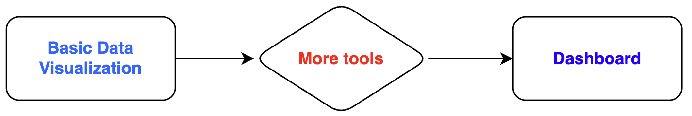

Advanced Data Visualization
INS-605: Data Analysis

Lecturer: Dr. Sothea HAS
1 Intro & Motivation
1.1 Introduction
- In Data Visualization of Data Analysis I, we learned:
- How to inspect a single variable individually
- Uncover relationship between multiple variables
- Detect trend/evolution of variables…
- All these are to extract knowledge from the data only.
- We now learn additional tools to build a presentable Dashboard.

- We will use Amazon Product Rating as a case study.
1.2 Dashboarding process
- General view of dashboarding:
┌──────────────────────┐
│ Business objective │
└──────────┬───────────┘
▼
┌───────┐
│ KPIs │
└───┬───┘
▼
┌────────────────────────────────────┐
│ Understanding and prepare the data │
└─────────────────┬──────────────────┘
▼
┌──────────────────────────────────────────┐
│ Explore the data according to key points │
└────────────────────┬─────────────────────┘
▼
┌─────────────────────────────┐
│ Validate → test → iterate ↩ │
└─────────────────────────────┘- Key: Business objective drives everything a dashboard will cover.
- Business objective: Why does this dashboard exist? Audiences?
- Key Point Indicators: Measurable points supporting the objective. Ex:
- Number of Products
- Number of Ratings
- Average Rating
- % of High Ratings…
- Data wrangling: Prepare the data.
- Explore the data: Analyze toward the KPIs & select visual designs.
- Validate \(\to\) test/feedback \(\to\) revise \(\hookleftarrow\).
Data wrangling is very important as in business, beautiful dashboard built on wrong info is worst than no dashboard at all.
1.2 Dashboarding process (cont.)
┌────────────────────────────┐
│ Boost platform performance │
└─────────────┬──────────────┘
▼
┌───────────────────────────────┐
│ Customer/Product/Rating Trend │
└───────────────┬───────────────┘
▼
┌────────────────┐
│ Data Wrangling │
└───────┬────────┘
▼
┌─────────────────────────────────────────┐
│ Explore the data & select graph designs │
└───────────────────┬─────────────────────┘
▼
┌─────────────────────────────┐
│ Validate → test → iterate ↩ │
└─────────────────────────────┘- Target audience: Marketing, sales and product managers.
- Q1: What 3-4 KPIs would you highlight on the dashboard?
2 Overall view
2.1 Overview dashboard
Data Wrangling
- Quick column normalization:
# Normalize cols
data.columns = (
data.columns
.str.strip()
.str.lower()
)
# Map new names:
rename_map = {}
possible_names = {
"userid": "user_id",
"productid": "product_id",
"producttype": "product_type",
"rating": "rating",
"timestamp": "timestamp",
}
for col in data.columns:
if col in possible_names:
rename_map[col] = possible_names[col]
data = data.rename(columns=rename_map)- We shall ensure data types.
- Drop/impute missing values.
- Add:
date,year,monthfor analysis.
data["rating"] = pd.to_numeric(
data["rating"],
errors="coerce")
data["timestamp"] = pd.to_numeric(
data["timestamp"],
errors="coerce"
)
# UNIX timestamps -> date time
data["date"] = pd.to_datetime(
data["timestamp"],
unit="s",
errors="coerce"
)
data["year"] = data["date"].dt.year
data["month"] = data["date"].dt\
.to_period("M").astype(str)
# Drop NA
data = data.dropna()
print(data.shape)(1348246, 9)Overall: KPIs
- Four KPIs are
- Toal reviews
- Number of customers
- Number of products
- Average rating
- We build a function
make_kpi().
import plotly.graph_objects as go
def make_kpi(value, title, color, value_format=",d"):
fig = go.Figure() # initalize `go` object
fig.add_trace( # add trace as `indicator`
go.Indicator(
mode="number",
value=value, # `value` argument is used.
title={
"text": title,
"font": {
"size": 15,
"color": color
}
},
number={
"valueformat": value_format,
"font": {
"size": 28,
"color": "#F5F5F5" # white text
}
}
)
)
fig.update_layout(
paper_bgcolor="#454545", # bk color
plot_bgcolor="#454545", # bk color
margin=dict(l=10, r=10, t=20, b=10),
height=140
)
return figOverall: KPIs (cont.)
- Apply on Total reviews:
- On Total customers:
- We build a function
make_kpi().
import plotly.graph_objects as go
def make_kpi(value, title, color, value_format=",d"):
fig = go.Figure() # initalize `go` object
fig.add_trace( # add trace as `indicator`
go.Indicator(
mode="number",
value=value, # `value` argument is used.
title={
"text": title,
"font": {
"size": 15,
"color": color
}
},
number={
"valueformat": value_format,
"font": {
"size": 28,
"color": "#F5F5F5" # white text
}
}
)
)
fig.update_layout(
paper_bgcolor="#454545", # bk color
plot_bgcolor="#454545", # bk color
margin=dict(l=10, r=10, t=20, b=10),
height=140
)
return figGraphs
- Reveiws by product types.
Code
## category summary
category_summary = (
data.groupby("product_type")
.agg(
reviews=("rating", "size"),
avg_rating=("rating", "mean"),
customers=("user_id", "nunique"),
products=("product_id", "nunique")
)
.reset_index()
.sort_values("reviews", ascending=False)
)
# select top 15 products
top_categories = category_summary.head(15)
# Initialize `go` object
fig_product = go.Figure()
# Create bar chart
fig_product.add_trace(
go.Bar(
x=top_categories["reviews"][::-1],
y=top_categories["product_type"][::-1],
orientation="h",
marker_color="#4CC9F0"
)
)
fig_product.update_yaxes(
showgrid=False
)
# Set the graph property
fig_product.update_layout(
width=450,
height=430,
title="Reviews by Product Type",
paper_bgcolor="#454545",
plot_bgcolor="#454545",
font=dict(color="#F5F5F5"),
showlegend=False
).show()- Rating & Reveiw Trend:
Code
# Review activity
fig_rating = go.Figure()
fig_rating.add_trace(
go.Bar(
x=rating_summary["rating"],
y=rating_summary["reviews"],
text=rating_summary["reviews"],
texttemplate="%{text:,}",
textposition="outside",
marker_color="#F4A261"
)
)
fig_rating.update_xaxes(
showgrid=False
)
# Set high enough box to show all numbers
max_reviews = rating_summary["reviews"].max()
fig_rating.update_yaxes(
range=[0, max_reviews * 1.15]
)
fig_rating.update_layout(
height=180,
width=450,
title="Rating Distribution",
paper_bgcolor="#454545",
plot_bgcolor="#454545",
font=dict(color="#F5F5F5"),
showlegend=False
).show()Code
# Review activity
fig_activity = go.Figure()
fig_activity.add_trace(
go.Scatter(
x=monthly["date"],
y=monthly["reviews"],
mode="lines+markers",
line=dict(
color="#72D572",
width=3
),
marker=dict(size=6)
)
)
fig_activity.update_xaxes(
showgrid=False
)
fig_activity.update_layout(
height=180,
width=450,
title="Review Activity Over Time",
paper_bgcolor="#454545",
plot_bgcolor="#454545",
font=dict(color="#F5F5F5"),
showlegend=False
)Assemble everything
- We assemble everythin using
make_subplots():
# Assemble everything with make_subplots
from plotly.subplots import make_subplots
fig_overall = make_subplots(
rows=2, # number of rows
cols=12, # number of cols but break into 4 and 3
specs=[
[
{"type": "indicator", "colspan": 3}, None, None,
{"type": "indicator", "colspan": 3}, None, None,
{"type": "indicator", "colspan": 3}, None, None,
{"type": "indicator", "colspan": 3}, None, None
],
[
{"type": "bar", "colspan": 4}, None, None, None,
{"type": "bar", "colspan": 4}, None, None, None,
{"type": "scatter", "colspan": 4}, None, None, None
]
], # Define different cols between 1st and 2nd row.
subplot_titles=[
"Total Reviews",
"Total Customers",
"Total Products",
"Average Rating",
"Reviews by Product Type",
"Rating Distribution",
"Review Activity Over Time"
], # Define subplots' names
vertical_spacing=0.05,
horizontal_spacing=0.05
)- Think about it as an empty canvas to be painted on.
- KPI can be added as
traceto the empty canvas.
- The rests and their properties are added the same way:
Code
# Add product:
fig_overall.add_trace(
fig_product.data[0],
row=2, col=1
)
##-------> Product property
fig_overall.update_xaxes(
showgrid=False,
row=2, col=1
)
fig_overall.update_yaxes(
showgrid=False,
row=2, col=1
)
# Add Rating:
fig_overall.add_trace(
fig_rating.data[0],
row=2, col=5
)
##-------> Rating graph properties
max_reviews = rating_summary["reviews"].max()
fig_overall.update_yaxes(
range=[0, max_reviews * 1.15],
row=2,
col=5
)
fig_overall.update_xaxes(
showgrid=False,
color=MUTED_TEXT,
tickfont=dict(color=MUTED_TEXT),
row=2,
col=5
)
# Add Review Trend:
fig_overall.add_trace(
fig_activity.data[0],
row=2, col=9
)
##-------> Review activity
fig_overall.update_xaxes(
showgrid=False,
color=MUTED_TEXT,
tickfont=dict(color=MUTED_TEXT),
row=2,
col=9
)Assemble everything (cont.)
- Put the boxes around KPIs:
# Define the four KPI card positions
kpi_boxes = [
(0.010, 0.215, KPI_COLORS[0]),
(0.275, 0.470, KPI_COLORS[1]),
(0.535, 0.730, KPI_COLORS[2]),
(0.795, 1.000, KPI_COLORS[3])
]
for x0, x1, color in kpi_boxes:
fig_overall.add_shape(
type="rect",
xref="paper",
yref="paper",
x0=x0,
x1=x1,
y0=0.58,
y1=0.98,
fillcolor=CARD_COLOR,
line=dict(
color=color,
width=2
),
layer="below"
)- Final full layout touch.
# Full layout
fig_overall = fig_overall.update_layout(
title=dict(
text="Amazon Product Reviews — Overall View",
font=dict(
size=24,
color=TEXT_COLOR
),
x=0.02,
xanchor="left"
),
height=530,
width=970,
paper_bgcolor=BG_COLOR,
plot_bgcolor=BG_COLOR,
showlegend=False,
margin=dict(
l=60, r=40, t=90, b=50
),
font=dict(
family="Arial",
color=TEXT_COLOR
)
)- Process: init.
goobjects \(\to\)make_subplots().
- One can also do: init.
make_subplots\(\leftarrow\)go.
Final result
3 Customer veiw
3.1 Customer view
- What aspects of customers would you consider given the following information:
['user_id', 'product_id', 'product_type', 'rating', 'date', 'year', 'month']3.1 Customer view
- Customer information we can compute:
- How enganged are they?
- What do they buy/review?
- How do their ratings behave?
- How active they are?…
- We compute those aspects:
Customer KPIs
- Number of customers.
- Average number of reviews.
- Average rating per customer.
- % of repeat customers.
- These are four indicators for our cumstomer dashboard.
- We start from
make_subplotsand eventually add more elements.
- Initialize fig_customer of
make_subplotsobject.
fig_customer = make_subplots(
rows=3,
cols=12,
specs=[
# Row 1: 4 KPI
[
{"type": "indicator", "colspan": 3}, None, None,
{"type": "indicator", "colspan": 3}, None, None,
{"type": "indicator", "colspan": 3}, None, None,
{"type": "indicator", "colspan": 3}, None, None
],
# Row 2: 2 charts
[
{"type": "histogram", "colspan": 6}, None, None,
None, None, None,
{"type": "bar", "colspan": 6}, None, None,
None, None, None
],
# Row 3: 1 chart
[
{"type": "bar", "colspan": 12}, None, None, None,
None, None, None, None,
None, None, None, None
]
],
subplot_titles=[
"", "", "", "",
"Customer Review Activity",
"Customers by Product Type",
"Customer Engagement Distribution"
],
vertical_spacing=0.05,
horizontal_spacing=0.06
)Customer KPIs (cont.)
- We then add all the KPIs:
# Add number of customers
fig_customer = fig_customer.add_trace(
go.Indicator(
mode="number",
value=total_customers, # alr computed
title=dict(
text="Total Customers",
font=dict(
size=15,
color=KPI_COLORS[0]
)
),
number=dict(
valueformat=",d",
font=dict(
size=28,
color=TEXT_COLOR
)
)
),
row=1,
col=1
)- The rests are added the same way.
Code
fig_customer = fig_customer.add_trace(
go.Indicator(
mode="number",
value=avg_reviews_customer,
title=dict(
text="Avg Reviews / Customer",
font=dict(
size=15,
color=KPI_COLORS[1]
)
),
number=dict(
valueformat=".1f",
font=dict(
size=28,
color=TEXT_COLOR
)
)
),
row=1,
col=4
)
fig_customer = fig_customer.add_trace(
go.Indicator(
mode="number",
value=repeat_customer_rate,
title=dict(
text="Repeat Customer Rate",
font=dict(
size=15,
color=KPI_COLORS[2]
)
),
number=dict(
valueformat=".1f",
suffix="%",
font=dict(
size=28,
color=TEXT_COLOR
)
)
),
row=1,
col=7
)
fig_customer = fig_customer.add_trace(
go.Indicator(
mode="number",
value=avg_customer_rating,
title=dict(
text="Avg Customer Rating",
font=dict(
size=15,
color=KPI_COLORS[3]
)
),
number=dict(
valueformat=".2f",
font=dict(
size=28,
color=TEXT_COLOR
)
)
),
row=1,
col=10
)4 Product view
5 Trending veiw
6 Final Dashboard
🥳 Yeahhhh 🥂!!!
Any question? Take a break!